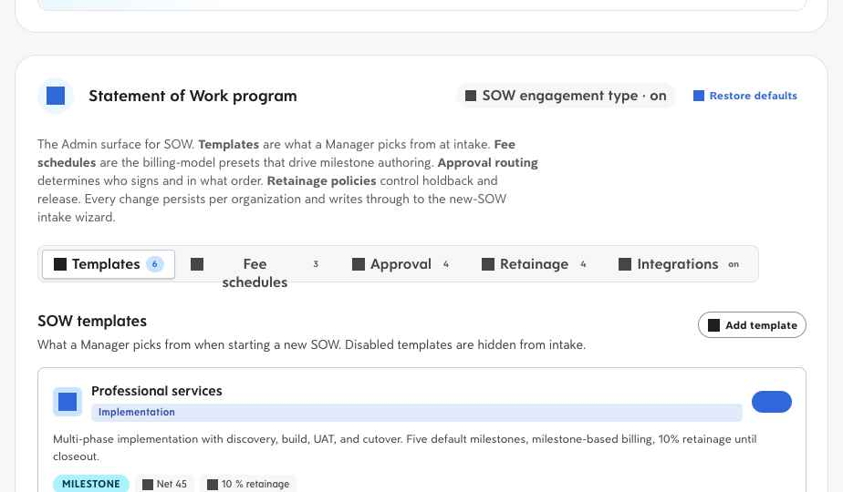
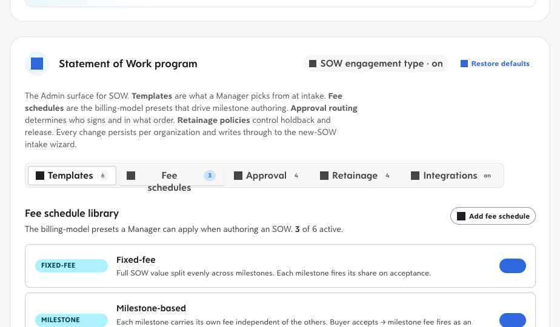
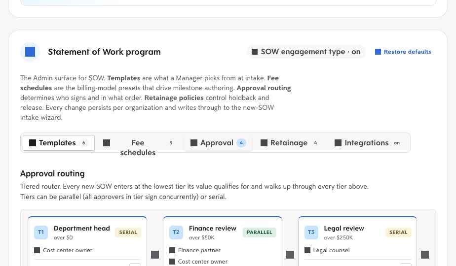
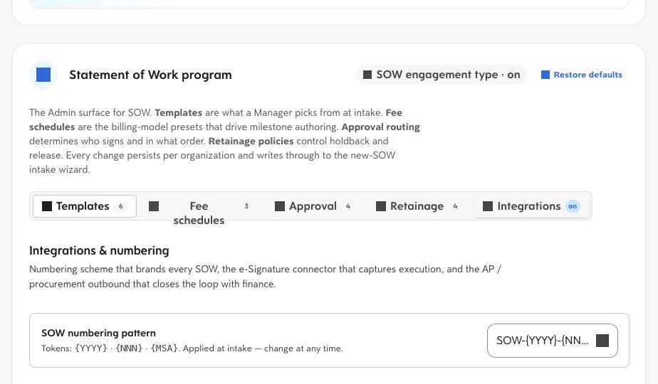
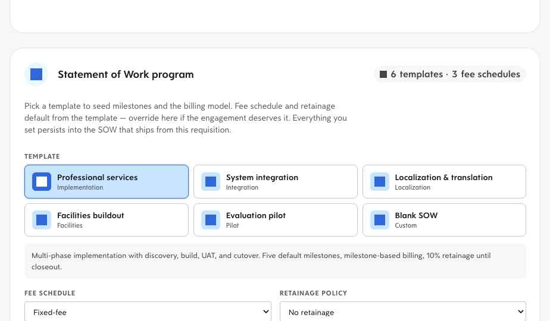
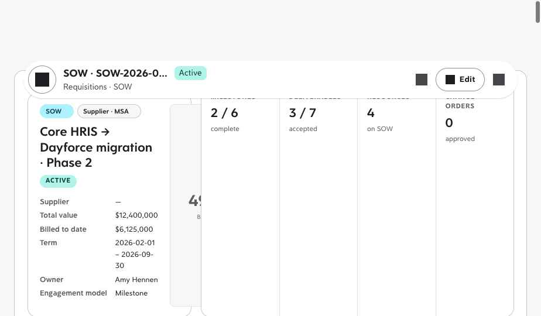
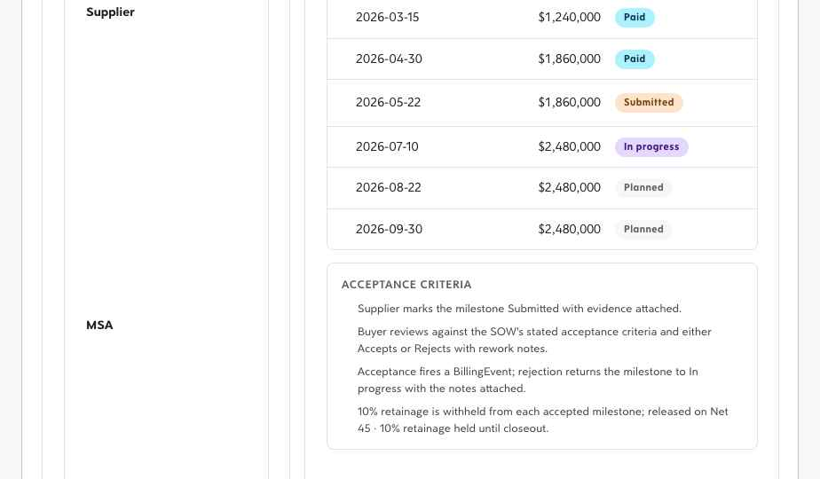
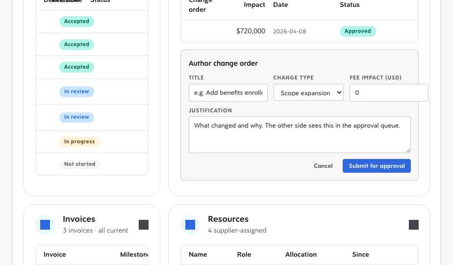
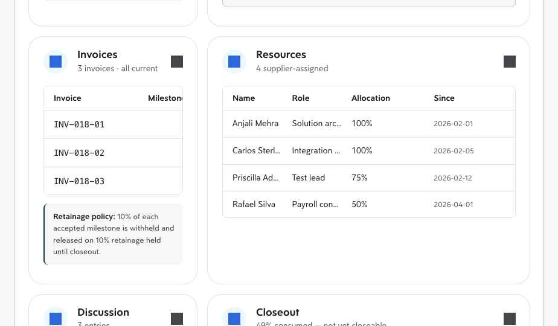

See the entire SOW flow in fifteen minutes.
Seven sections, all four roles. Flip the Statement of Work engagement type on, configure the program, open a new SOW from a template, run it through milestone acceptance and a change order, watch the supplier propose and invoice from the other side of the same database, and follow the named consultant through their phone — all inside the same code path that already runs Frontline today. Every screenshot is a real capture of the live prototype.
Enable Statement of Work as an engagement type.
SOW lives behind the canonical engagement-type config engStatementOfWork. The Energy industry pack ships it on by default; every other tenant turns it on with a single toggle. The legacy derived sow flag mirrors the canonical, so consumers don't care which gate was set.
Turn on Statement of Work
One toggle unlocks the full SOW workbench across all four roles. No app reload required.
-
Side nav →
Settings→Configuration→Engagement typesOpen the Engagement types card.
The card lists the four canonical engagement types — Shift, Assignment, Project, Statement of Work. Shift is always on. The other three are opt-in.
If you're on Energy: all four are pre-enabled — this card opens with a "4 of 4 active" header chip and you can skip to step 03. -
Flip the Statement of Work row to on.
Every downstream surface subscribes to the
featureflags:changeevent and re-renders immediately. The legacysowflag also flips on (it's a derived value). -
Confirm the new surfaces light up.
Three things happen at once:
- A new Statement of Work program card appears in Settings → Configuration.
- The New Requisition flow gains a Statement of Work option in the Engagement Type picker.
- The Dashboard's engagement switch gains an SOW lane with its own For-you-today + spend tracker tiles.
Flag-off contract: turn the engagement type off again and every SOW surface disappears with byte-identical parity to today's Frontline-only ship.
Pick templates, fee schedules, approval routing, retainage, and integrations.
Tenant admin · program owner
Owns the SOW program configuration — what templates Managers can pick from at intake, what billing models are available, which approval tiers route which dollar amounts, what retainage policies apply, and which third-party systems consume the events.
-
Settings →
Configuration→SOW programScroll to the Statement of Work program card.
The card sits between Supplier types and Program (funding) in the Configuration stack. Card head carries the SOW engagement-type chip and a Restore defaults action.
-
Tour the Templates tab.
Six seeded SOW templates ship by default: Professional services, System integration, Localization & translation, Facilities buildout, Evaluation pilot, Blank SOW. Each template carries a default milestone schema, billing model, retainage percentage, and payment terms. Disabled templates are hidden from Manager intake.
Try: Disable the Evaluation pilot template, then walk through Manager intake — it won't appear. Re-enable it from this tab to restore.Settings → Configuration → SOW program · Templates tab
Each template card shows category pill, billing model, payment terms, retainage, and a numbered list of default milestones. Toggle the right-edge switch to retire a template without deleting it. -
Switch to Fee schedules.
Six billing-model presets ship: Fixed-fee, Milestone-based, T&M with cap, Not-to-exceed, Cost-plus, Blended rate. Three are on by default; the other three are off and can be enabled per program.
Settings → Configuration → SOW program · Fee schedules tab
Each row shows the canonical name, the underlying billing model, a description, and an active toggle. Managers pick from the enabled subset at intake. -
Visit the Approval tab.
Tiered router with four seeded tiers — Department head, Finance review, Legal review, Executive sign-off. Each tier carries an amount threshold, a list of approver groups, a parallel/serial mode, and an SLA in days.
Three policy rows below the tier diagram control: auto-route on submission, the value above which Legal review is mandatory, and the escalation window after which an unactioned approval skips to the next tier's delegate.
Settings → Configuration → SOW program · Approval routing
The flow reads left-to-right: every new SOW enters at the lowest tier its value qualifies for and walks up through every tier above. Parallel tiers have all approvers in the tier sign concurrently; serial tiers sign in order. -
Skim the Retainage policies tab.
Four seeded policies: No retainage (0%, fixed-fee), 5% · until punch-list cleared, 10% · until closeout, 15% · until pilot signoff. Each policy's release trigger is named so Managers know exactly when the holdback unlocks.
The retainage policy a Manager picks at intake drives the gross / retainage held / net payable columns on every invoice generated for that SOW — see step 13. -
Open the Integrations tab.
Three rows: the SOW numbering pattern (tokens
{YYYY}·{NNN}·{MSA}), the e-Signature provider connector (DocuSign / Adobe Sign / Dropbox Sign / Native Dayforce e-Sign + counter-signature toggle), and the AP / procurement outbound selector (Coupa / SAP Ariba / Oracle / NetSuite / Dayforce native). A fourth row catalogues the four outbound webhooks that fire automatically —sow.created,milestone.accepted,change_order.approved,invoice.generated.Settings → Configuration → SOW program · Integrations tab
The OAuth flow for each connector lives in the existing Settings → Integrations area; this tab is the SOW-specific routing that rides on top.
Start from a template on the New Requisition form.
Buyer-side manager
Opens the SOW from a template, sends it out to the supplier panel for proposals, signs the winner, runs the engagement through milestone acceptance and change orders, and approves the invoices.
-
Side nav →
Requisitions→CreateOpen the New Requisition flow.
The same flow that opens a Shift or Assignment requisition. The first card — Engagement Type — now shows four options instead of one.
-
Pick Statement of Work.
The form mode switches: the Setup card collapses its per-site picker to a corporate fill, the Schedule card hides itself, and a new Statement of Work program card slots in between Setup and Work Assignments. The card reads from the Admin templates / fee schedules / retainage policies in real time.
New Requisition → Engagement Type = Statement of Work
Six tappable template cards. The selected template (Professional services, here) seeds the fee-schedule and retainage-policy dropdowns underneath — override either if the engagement deserves it. -
Pick a template — Professional services.
The card snaps:
- Fee schedule defaults to Milestone-based (matches the template's billing model)
- Retainage policy defaults to 10% · until closeout (matches the template's retainage)
- The Default milestones strip appears with the five-milestone scaffold — Discovery, Design & build, UAT, Cutover, Closeout — editable on the next step.
-
Finish the form and submit.
Fill in Setup (cost center, owner, term), Work Assignments (the named roles you want the supplier to staff), and Distribution (the supplier panel that should see the RFx). Submit. The SOW lands in Draft status and the configured approval router kicks in.
Auto-route is on by default: on submission, the SOW immediately enters the lowest qualifying tier from the Admin's approval config. The Manager sees the routing in the audit log on the detail page (next section).
Evaluate proposals, accept milestones, author change orders, approve invoices.
The unified requisition-detail page dispatches to the SOW variant body. Nine interactive accordions cover the whole engagement lifecycle — Agreement, Proposals, Milestones, Deliverables, Change orders, Invoices, Resources, Discussion, Closeout. Manager actions and Agency actions live on the same accordion, role-flipped.
-
Requisitions → click an SOW row
Open the SOW detail page.
The detail hero shows the SOW name, status pill, supplier · MSA chips, owner, term, total value, billed to date, and the engagement model. A KPI strip on the right reads Milestones X / Y complete, Deliverables X / Y accepted, Resources, Change orders approved.
SOW detail · hero + KPIs
Same chrome as every other engagement-type variant — the unified detail page does the layout, the variant body just supplies the accordions. -
Skim the Agreement accordion.
Open by default. Twelve-row InfoGrid covers supplier, MSA, country, term, total value, billing model, payment terms, retainage %, owner, cost center, category, and risk score. The SOW's summary blurb sits below as a teal-bordered note.
-
Walk the Milestones accordion.
Sortable table — milestone name, due date, fee, status, action column. Status pills: Planned, In progress, Submitted, Accepted, Paid, Rejected. Manager sees Accept / Reject actions on Submitted rows. Acceptance fires a BillingEvent which the Invoices accordion picks up. The Acceptance criteria block underneath summarises the policy in plain English including the retainage rule from intake.
SOW detail · Milestones accordion · Manager view
Status pills reflect the milestone's place in the lifecycle. The Acceptance criteria block below repeats the policy and the retainage rule the Manager picked at intake. -
Accept a deliverable.
Same shape as Milestones — table, status pills, action column. Manager sees Accept / Reject on rows in review. Acceptance writes to the audit log via the shared
writeAudithelper.SOW detail · Deliverables accordion · Manager viewThe artifact preview component lives behind the row name in production; the prototype shows the row + state machine. -
Author a change order.
Click + Author change order in the accordion head. An inline composer drops in below the existing change-order table — Title, Change type (Scope expansion / reduction / Timeline / Resource swap / Fee adjustment), Fee impact, Justification narrative. Submit, and the row joins the table in In approval status. Buyer-initiated COs route through the Admin's approval config; Agency-initiated COs follow the same flow with the author flag flipped.
SOW detail · Change orders accordion · author composer
The composer reuses the SOW currency and surfaces the existing seeded CO above. Buyer Approves rows in approval with one click. -
Approve a milestone-tied invoice.
The Invoices accordion derives one invoice row per Accepted or Paid milestone, applying the SOW's retainage policy to compute gross / retainage held / net payable. Pending approval rows expose Approve / Dispute. The retainage policy is repeated as a footer note so the Manager knows exactly when the held amount releases.
SOW detail · Invoices accordion
Retainage held is shown as a negative line item. The Net payable column always reads as the figure that actually flows to the supplier this cycle. -
Post to the Discussion thread.
Per-SOW comment thread with Buyer / Supplier / System actor stamps. System events (BillingEvent fired, milestone accepted) auto-post so the buyer can read the engagement narrative top-to-bottom.
Same accordions, role-flipped actions.
Supplier-side delivery team
Sees the same nine accordions the Manager sees — but the action columns swap. Where the Manager accepts, the Agency submits. Where the Manager approves, the Agency composes.
-
Account menu → View as →
AgencySwitch the impersonated role to Agency.
The
flexViewAsRoleglobal flips; every accordion's role-conditional branch re-resolves. No reload. The SowDetailSections wrapper re-renders with the supplier-side action set live.Tenant scope: in production the Agency tenant sees only SOWs distributed to them viaSupplierTenantLink. The prototype's role switch surfaces the same data with the Agency action set so demos work without standing up two browser sessions. -
Submit a proposal (for SOWs in Draft / In approval).
When the SOW status is Draft or In approval, the Proposals accordion appears at the top of the detail body. The Agency-side action set surfaces a + Submit proposal button that opens an inline composer — Proposed fee, Timeline (-4w / -2w / on schedule / +2w / +4w), Team size, Approach & references narrative.
Submission joins the table the buyer sees with side-by-side scoring. The buyer Awards the leader; the others auto-flip to Declined.
-
Submit a milestone for acceptance.
On the Milestones accordion the Agency sees Submit on Planned / In progress rows, Resubmit on Rejected. Click. Status flips to Submitted; buyer's Accept / Reject UI lights up; the audit log captures the transition.
-
Upload a deliverable artifact.
The Deliverables accordion's Agency action set: Upload artifact on Not started / In progress; Re-upload on Rejected. Upload pushes the row to In review for the buyer.
-
Request a change order.
Same composer as the Manager, accessed the same way from the Change orders accordion head. The author flag flips to "Agency". Routes through the buyer's approval config; the buyer sees the row and Approves or rejects it.
-
Generate & submit invoices.
Invoice rows derive automatically from each Accepted milestone in the same accordion. Net payable applies retainage. Agency reviews each, attaches a cover, and the buyer sees the row in their queue with the Approve / Dispute actions.
-
Post a weekly status update.
Discussion accordion. The Agency-stamped post lands at the top of the thread; the buyer sees it on their next visit and can reply inline.
Named consultant logs time, expenses, runs compliance, and flags blockers from mobile.
Named SOW consultant
The supplier-managed person who actually does the work. They don't punch shifts — for T&M SOWs they log hours; for fixed-fee they just see the assignment and run compliance. Worker mobile is the primary surface.
-
Account menu → View as →
WorkerOpen the worker mobile preview.
The desktop chrome stays in place; an iPhone frame docks to the right edge of the screen and renders the worker's mobile experience. The worker's Home screen loads with the standard sections (July earnings, shift invites, upcoming shifts) and a new section at the top — On SOW.
Note on screenshots. Worker mobile screens are captured inside the iOS frame, which in the prototype is a side-docked preview overlay. The four sub-screens below are described from real captured behaviour but the inline images live in the live app — open the preview at any time to compare. -
Tap the On SOW card.
The card carries the SOW name, role title, allocation % (e.g. "100%"), supplier label, SOW ID chip, and a "since" date. A teal background and chevron arrow signal it's tappable.
Tap opens a full-screen overlay inside the iPhone frame — the SOW assignment detail view.
-
Read the assignment hero.
Top of the detail screen: SOW name as the page title, role · allocation · since date as the sub. Below the hero, a Current milestone card reads the supplier's active milestone with name, due date, and status pill.
Then a Quick actions 2×2 grid: Log T&M hours, Submit expense, Compliance, Flag a blocker. (Log T&M only renders when the SOW's billing model is
tm_capped.)Then a Contacts row with the buyer owner and Agency PM, and a Pay this period tile with the worker's submitted-and-approved time + expenses this week.
⏱Log T&M hoursWeekly grid Mon–Sun, decimal hours, Mon–Fri pre-filled 8h. Submission writes to the audit log and toasts the worker.💳Submit expenseCategory chip-row (Travel / Lodging / Meals / Mileage / Materials / Other), amount, note, photo-receipt placeholder.✓CompliancePer-SOW checklist (NDA, client security, IP assignment, site safety, data handling). Tap each row to acknowledge; remaining count drives the "cleared to start" gate.⚑Flag a blockerType chip-row (Blocked by client / Scope ambiguity / Resource constraint / Compliance gap / Other) + detail. Routes to the Agency PM and aggregates into the weekly status report. -
Run through the four quick actions.
Each opens its own sub-screen inside the assignment detail; "‹ Assignment" in the top-left walks you back. Submissions write to the audit log and toast the worker; the Agency PM sees them in their inbox.
What this gives the supplier: a single mobile-first surface for everything a consultant needs to do on the SOW. Replaces the email + spreadsheet pattern Fieldglass and Vndly leave to the supplier's own time-and-expense tool.
One-click audit-ready closeout package.
Once every milestone is Accepted, every deliverable Signed off, the fee schedule fully consumed, and no change orders are open, the SOW is ready to close. The Closeout accordion on the unified detail page surfaces a readiness checklist and a Generate closeout package action gated by the checklist.
-
Open the Closeout accordion.
Hidden on Draft / In approval SOWs. Visible from Active onward.
-
Confirm the readiness checklist.
Four green-checked rows:
- All milestones accepted
- Full fee schedule consumed
- All deliverables signed off
- No open change orders
The button below reads "Generate closeout package" — enabled only when all four boxes are checked.
-
Generate the package.
The action writes to the audit log and toasts the Manager. In production it bundles the signed SOW PDF, every accepted deliverable, the full change-order chain, the financials summary including final retainage release, and the executed closeout invoice into a single audit-ready zip stored on
SupplierContract.closeoutPack.SOX-grade trail: every state transition through this entire walkthrough — proposal submission, milestone acceptance, change-order approval, invoice payment, retainage release — is in the audit log, scoped to the SOW. The closeout package is just a packaged view of that trail.
That's the full SOW lifecycle inside Flex Work — Admin configures, Manager opens and runs, Agency bids and delivers, Worker does the work, the engagement closes out cleanly, and finance gets a tied-out package. The 48 parity tasks behind this flow live in SOW Parity Tasks; the architectural mapping shows every task hangs off an existing surface — zero new top-level files in the IA, two reusable components added (the milestone-acceptance accordion shape and the structured connector card).